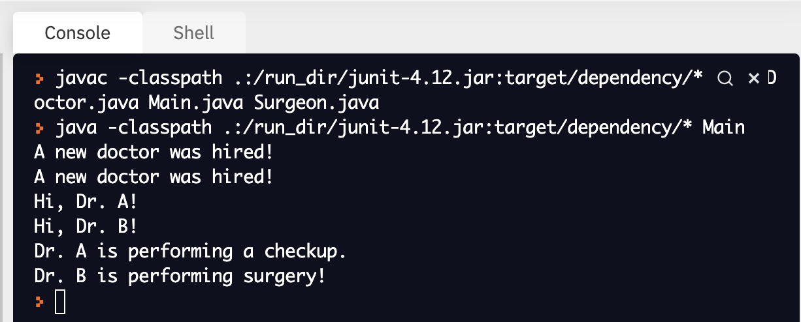

8.3. Overriding Methods¶
Now that you know how to show a relationship between two classes (cough use the keyword “extends” cough), you are now ready to see how instance variables and methods of a superclass can be used by a subclass.
Imagine that we wanted to create a hospital simulation program. Let’s start by declaring a Doctor class, which represents all of the doctors that work at our hospital.
public class Doctor{
private String name;
public Doctor(){
System.out.println("A new doctor was hired!");
}
public String getName(){
return name;
}
public void setName(String n){
name = n;
System.out.println("Hi, " + name + "!");
}
public void treatPatient(){
System.out.println(this.getName() + " is performing a checkup.");
}
}
What if we wanted our simulation to represent a more realistic hospital? One that employs all kinds of doctors, like surgeons and primary care physicians? How could we utilize the power of inheritance to make our simulation more complex?
Check this out:
public class Surgeon extends Doctor{
public void treatPatient(){
System.out.println(this.getName() + " is performing surgery.");
}
}
The Surgeon class looks pretty empty right? It doesn’t have any instance variables or a constructor! That’s ok! Why?
Imagine you wrote the following in Main:
public class Main{
public static void main(String args[]){
Doctor d = new Doctor();
Surgeon s = new Surgeon();
d.setName("Dr. A");
s.setName("Dr. B");
d.treatPatient();
s.treatPatient();
}
}
Before we examine the output of this program, I want you to pay attention to how each object is instantiated. Notice that we are still specific about the type of the object being instantiated? If you are making a Doctor object, then the reference variable needs to be of type Doctor. If you are making a Surgeon object, then the reference variable needs to be of type Surgeon.
So what would happen if you were to execute the program seen above? You would get the following output:
{kind=link}
Why does it look like the constructor of our Doctor class was executed twice even though we only instantiated one Doctor object? That’s because of inheritance! If a subclass extends a superclass and the subclass does not explicitly define a constructor, it will look for a constructor in the superclass to use. In this case, we didn’t define a constructor in our Surgeon class because the constructor in the Doctor class was perfectly good to use!
Notice that we were also able to call methods of our superclass for our subclass objects? This will work as long as the behavior you are trying to achieve is the same across each class. In the above example, it makes sense that our Surgeon class would be able to borrow the setName method and the name instance variable of the Doctor class because all doctors have a name, regardless of their specialty.
What happens if our subclass needs to do something different than its superclass? If that’s the case, then you will want to use something called method overriding. Overriding methods allow you to give your subclasses special behaviors not seen in the superclass. This is best illustrated through the treatPatient method seen in both the Doctor and Surgeon classes. The way doctors treat patients is different depending on their specialty. We want our methods to reflect that, so we have to define treatPatient in both the super and subclasses.
How does Java know which method to use? Well, Java is “smart enough” to use the most specific version of a method when it is called by an object of a certain type. In the example above, when the treatMethod of our s object is called, Java will first look in the Surgeon class for a treatPatient method. If it finds a method with a matching name, then it will execute the body of that method before returning to the Main class.
If it doesn’t find a matching method in the Surgeon class, it will move to the superclass and see if it can find anything there. If it does, it will execute the body of that method before returning to the Main class.
If it can’t find a method with a matching name in any superclass, then it will yell at you for being an irrational and crazy human. :p
One last thing. You may be wondering if it’s possible for Doctor objects to use instance variables, constructors and methods found in the Surgeon class. It is not possible! Inheritance only works one way.
Here’s our hospital simulation if you would like to play around with the code: